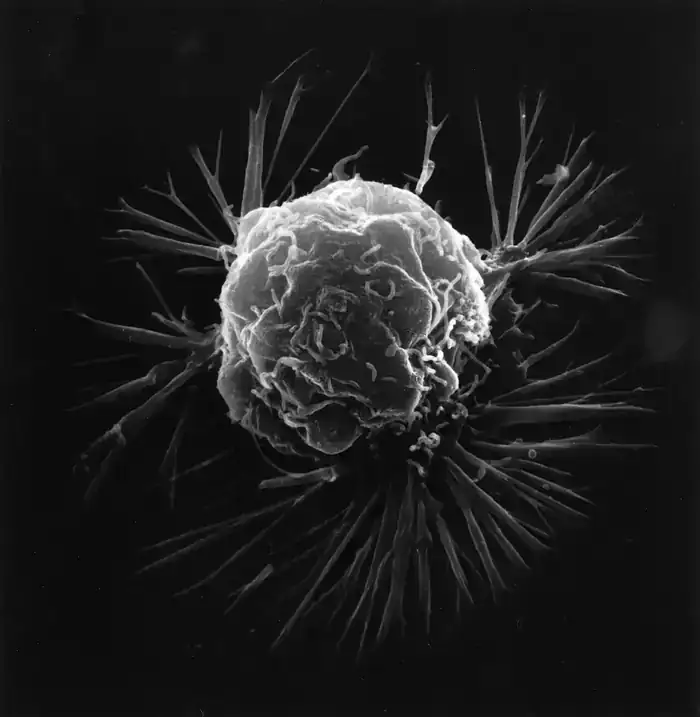
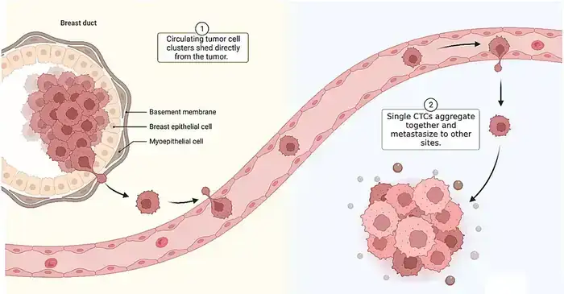
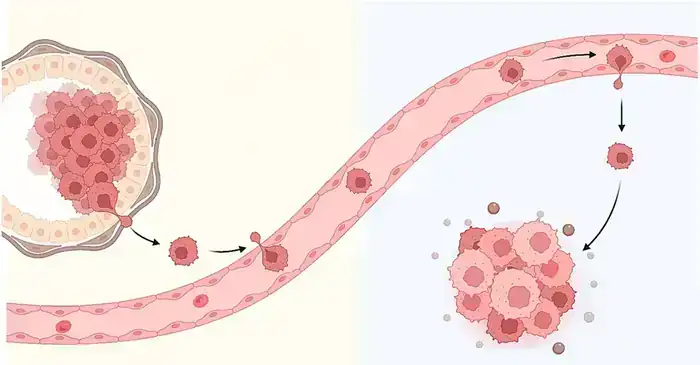

The paradox
Richard Peto noted in 1977 that cancer risk across species does not scale with body size or lifespan. If every cell has some chance of becoming malignant, a large, long-lived animal should accumulate far more tumours.
Maps, diagrams and images






The observation has held up: elephants and whales have cancer rates comparable to or lower than humans, despite vastly more cell divisions and decades more exposure.
The proposed answers
More tumour suppressors. Elephants have around 20 copies of TP53, the 'guardian of the genome', against our two. Cells with damaged DNA are killed more readily — a mechanism demonstrated in elephant cells in culture.
Slower metabolism per cell. Large animals have lower mass-specific metabolic rates, which may mean less oxidative damage per cell.
Cell-size and division-rate differences. Whale cells are not proportionally bigger, but their division dynamics may differ.
Evolutionary tuning. Species with large bodies and long lives may have been selected for stronger cancer suppression, because the alternative is extinction.
The data are thin. Cancer prevalence in wild cetaceans is hard to measure: they are rarely necropsied systematically, and many die of other causes before cancer would appear. The low rates may be partly ascertainment.
TP53 copy number is not the whole story. Elephants are not cancer-proof; they still get tumours. And some large, long-lived species do not have extra TP53.
The mechanism might be general rather than special. Better DNA repair, tighter cell-cycle checkpoints, and immune surveillance could all contribute without any single trick.
Why it matters
Because if large animals have evolved better cancer suppression, the mechanisms are potential drug targets. Comparative oncology is now a real field, and the elephant TP53 result is its founding observation.
It is also a clean example of the archive's method: a real paradox, several plausible mechanisms, and a lot of popular writing that presents one of them as the answer.
Sources for this page
- Wikipedia, “Peto's paradox” — statement and proposed mechanismsen.wikipedia.org
- Abrégé et al. (2015), TP53 retrogenes and cancer resistance in elephantsjamanetwork.com
- Caulin & Maley (2011), Peto's paradox and the evolution of cancer suppressiononlinelibrary.wiley.com
- U.S. National Cancer Institute, comparative oncologywww.cancer.gov
Open resources on this topic
- BookPeto's paradox revisited: theoretical evolutionary dynamics of cancer in wild populations. — ['Roche, Benjamin', 'Sprouffske, Kathleen', 'Hbid, Hassan', · 2012 (Internet Archive, free to read)
- BookNatural resistance to cancers: a Darwinian hypothesis to explain Peto's paradox. — ['Roche, Benjamin', 'Hochberg, Michael E', 'Caulin, Aleah F' · 2012 (Internet Archive, free to read)
- PapersOpen-access articles: DOAJ · PubMed Central · Internet Archive Scholar
- BooksPublic-domain and borrowable copies: Open Library · Project Gutenberg · Google Books
Cite this page
Momin, S. (2026). Peto's Paradox. The Larger World Archive. https://drsamonline.github.io/LARGE_GLOBE/petos-paradox.htmlMomin, Sohil. “Peto's Paradox.” The Larger World Archive, 2026, https://drsamonline.github.io/LARGE_GLOBE/petos-paradox.html.Momin, Sohil. “Peto's Paradox.” The Larger World Archive, 2026. https://drsamonline.github.io/LARGE_GLOBE/petos-paradox.html.@misc{petos2026petos,
author = {Momin, Sohil},
title = {Peto's Paradox},
year = {2026},
howpublished = {The Larger World Archive},
url = {https://drsamonline.github.io/LARGE_GLOBE/petos-paradox.html},
note = {Last reviewed 20 November 2026}
}Last reviewed 20 November 2026 · Corrections policy · this page is not peer reviewed